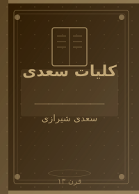
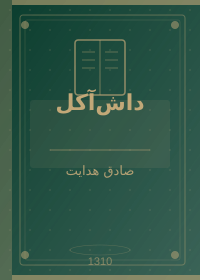

🇮🇷 آثار برگزیده ایرانی
ادبیات فارسی از دیرباز یکی از غنیترین و پرمایهترین ادبیات جهان بوده است. در این بخش با برگزیدهترین آثار نویسندگان ایرانی آشنا میشوید.

بوف کور
شاهکار ادبیات مدرن ایران. روایت کابوسگونهای از دنیای درونی راویای که میان واقعیت و رویا سرگردان است. نوشته شده به سبک سوررئالیستی.
رمان مدرن
سووشون
نخستین رمان بلند زن ایرانی. داستان زندگی زری و یوسف در شیراز دوران جنگ جهانی دوم. روایتی از مقاومت و از دست دادن.
رمان اجتماعی
چشمهایش
رمانی درباره عشق و مقاومت سیاسی. داستان عشق نقاشی به زنی که
چشمان معمولی استثنایی دارد.

سمفونی مردگان
روایت خانوادهای در شمال ایران در دهههای مختلف. یکی از برترین رمانهای فارسی معاصر با ساختاری موسیقایی.
رمان خانوادگی
جای خالی سلوچ
داستان زنی روستایی که شوهرش ناگهان ناپدید میشود. روایت مادرانهای از فقر و سرسختی در ایران روستایی.
رئالیسم روستایی
کلیات سعدی
مجموعهای از گلستان، بوستان و غزلیات. سعدی نامش پایدار است به شکر — پیوندی جاودانه با زبان فارسی.
شعر و نثر کلاسیک
دیوان حافظ
مجموعه غزلیات حافظ که فالنامه ایرانیان است. هر بیتش دنیایی از معنا و موسیقی کلام را در خود دارد.
شعر غزل
داشآکل
داستان کوتاهی از هدایت درباره مردی با آبرو در میان اوباش. روایتی دلنشین و تراژیک از شرافت و عشق در ایران قدیم.
داستان کوتاه🌍 آثار برگزیده جهانی
ادبیات جهان دریایی است بیکران. در این بخش هفت اثر ماندگار از نویسندگان سراسر دنیا معرفی میشود که هر کدام به نوعی نگاه انسان را به خود و جهان تغییر دادهاند.

۱۹۸۴
رمانی تأثیرگذار و هوشمندانه درباره جامعهای تحت کنترل مطلق. برادر بزرگ شما را میبیند — جملهای که تاریخ را تغییر داد.
دیستوپیا
غرور و تعصب
داستان الیزابت بنت و آقای دارسی. کلاسیک رمانتیک انگلیسی که هنوز هم خواننده پیدا میکند. ازدواج، طبقه اجتماعی، احساسات.
رمان عاشقانه
صد سال تنهایی
حکایت نسلهای خانواده بوئندیا در ماکوندو. برنده جایزه نوبل ادبیات. ترکیب خیال و واقعیت در سبک رئالیسم جادویی.
رئالیسم جادویی
شازده کوچولو
«آنچه مهم است با چشم دیده نمیشود». کتابی برای همه سنین که راز کودکانهای از محبت و از دست دادن را روایت میکند.
فلسفی/کودک
جنایت و مکافات
کاوشی در روانشناسی یک قاتل. راسکولنیکف که میکشد و با وجدانش دست و پنجه نرم میکند. شاهکار ادبیات روسی.
روانشناختی
کیمیاگر
سفر پسری اسپانیایی در جستجوی گنج. داستانی استعاری درباره رویا دنبال کردن و گوش دادن به ندای دل.
فلسفی
هملت
«بودن یا نبودن، مسئله این است». شاهزاده دانمارکی در تقابل با انتقام، عشق و مرگ. بزرگترین نمایشنامه تاریخ ادبیات.
تراژدی📊 جدول مقایسهای آثار
| نام کتاب | نویسنده | کشور | دهه انتشار | سبک | مناسب برای |
|---|---|---|---|---|---|
| بوف کور | هدایت | ایران | ۱۹۳۰ | سوررئالیسم | پیشرفته |
| سووشون | دانشور | ایران | ۱۳۴۰ | رئالیسم | عمومی |
| صد سال تنهایی | مارکز | کلمبیا | ۱۹۶۰ | رئالیسم جادویی | پیشرفته |
| ۱۹۸۴ | اورول | انگلستان | ۱۹۴۰ | دیستوپیا | عمومی |
| شازده کوچولو | سنتاگزوپری | فرانسه | ۱۹۴۰ | فلسفی | همه سنین |
| هملت | شکسپیر | انگلستان | ۱۶۰۰ | تراژدی | پیشرفته |